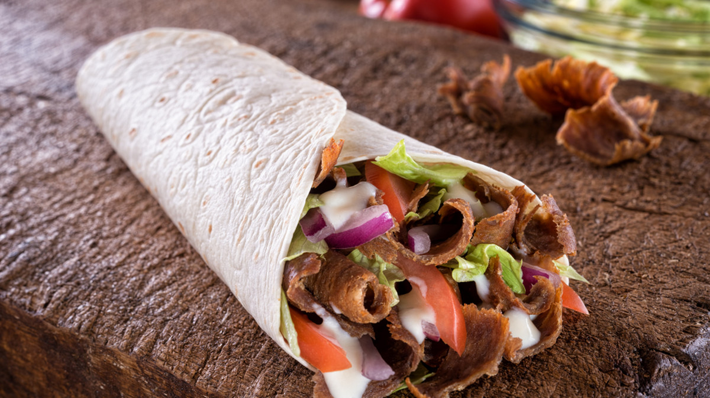

Kebab

Desription
Kebab – turecka potrawa. Określenie obejmuje ponad dwadzieścia odmian tej potrawy i nie jest jednoznaczne.
Ingredients
- mięso z piersi indyka – 100 g.
- mięso z uda kurczaka – 50 g (po usunięciu tłuszczu)
- oliwa – 5 ml.
- przyprawy: przyprawa do kurczaka „Złocisty Kurczak” – 2-4 g, przyprawa Garam Masala – 2-4 g.
Steps
- Zawartość Fix Kebab z sosem czosnkowym Knorr wymieszaj z ketchupem, majonezem i jogurtem. Jeśli chcesz, aby domowy kebab był zdecydowanie ostrzejszy – dodaj również chili.
- Zawartość fixu z opakowania (marynata) wymieszaj z 3 łyżkami oliwy. Piersi z kurczaka opłucz, osusz i pokrój w cienkie paski. Tak przygotowane mięso na domowy kebab wymieszaj z gotową marynatą i odstaw na 15 minut do lodówki.
- Na rozgrzanej patelni usmaż zamarynowane mięso kurczaka. Pomidory umyj, pozbądź się szypułek i pokrój w półksiężyce. Cebulę obierz i pokrój w piórka. W dużej misce spożywczej połącz oba rodzaje poszatkowanej kapusty i pokrojoną cebulę, a następnie dodaj przygotowany wcześniej sos i wymieszaj ręką dokładnie wszystkie składniki domowego kababu.
- Na stole, kuchennym blacie lub stolnicy rozłóż placki tortilli – na każdy z nich wyłóż wymieszaną z sosem kapustę, usmażonego kurczaka oraz pokrojonego w półksiężyce pomidora. Całość zroluj dość mocno, podwijając do środka boki tortilli, aby farsz domowego kebabu z kurczakiem nie wydostawał się na zewnątrz.
- Tak przygotowane domowe kebaby ułóż na wyłożonej pergaminem blasze i zapiecz w rozgrzanym do 180°C piekarniku przez 5-8 minut. Jeszcze lepszy efekt uzyskasz, zapiekając kebaby na elektrycznym grillu, jeśli taki posiadasz.